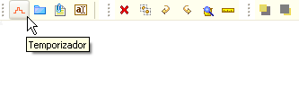
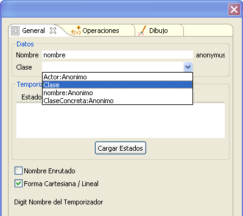
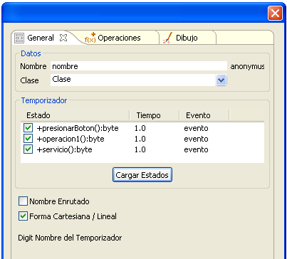
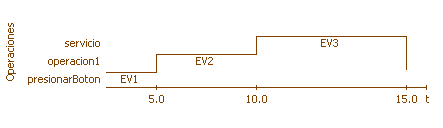
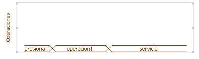
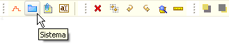
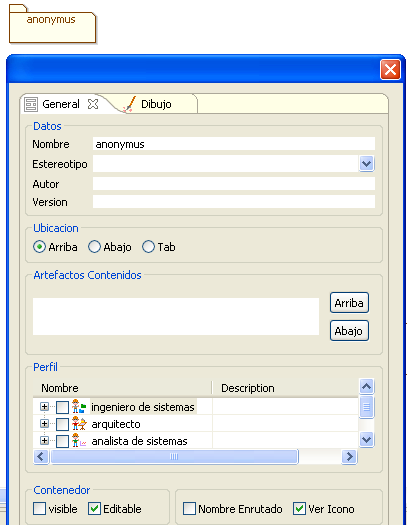

|
Plugin de Temporización |
|
El plugin de Temporización es parte de la solución UML+ para la realización de diagramas según la especificación UML 2.0, este diagrama genera archivos con la extensión ".dte". Este diagrama surge como una extensión a los demás diagramas de interacción en el cambio de la especificación 1.x a 2.0 Mediante el Diagrama de Temporización se pueden modelar los tiempos precisos en que uno o mas objetos realizan el envio de mensajes. Esto es particularmente útil a la hora de realizar la especificación de protocolos, sistemas dependientes de respuestas externas temporizadas, entre otras. Los elementos propios de este diagrama son:
Temporizador El temporizador es el único y principal elemento de este diagrama. Muestra la línea de tiempo de un objeto y el momento en que un determinado mensaje (a través de un método) es invocado. Para crear un Temporizador se debe seleccionar el icono en forma de segmento escalonado de línea roja.  Figura 1. Creación de un temporizador Se debe suministrar un nombre y adicionalmente para crear el Temporizador se debe seleccionar una clase de la cual se referenciarán los estados. Para esto al menos un Diagrama de Comunicación o de Secuencia debe estar activo en el marco de expresión.  Figura 2. Elección de la clase base Una vez se selecciona la Clase asociada (cualquiera de los elementos de los otros diagramas se pueden tomar com plantilla), se deben seleccionar los estados para los cuales se modelará el tiempo de activación. El tiempo de activación aparece en la segunda columna del temporizador que indica el tiempo entre un mensaje, para que el siguiente mensaje sea llamado y permite mediante doble click, ajustar el valor para el disparo de la función. Por último de encuentran las etiquetas para los eventos.  Figura 3. Operaciones del temporizador Si se desea mediante la pestaña de Operaciones se pueden agregar mas a la clase seleccionada, cambio que se verá igualemente en el diagrama del cual provenga. Para este caso los eventos se han nombrado EV1, EV2 y EV3 y se dan con intevalos de 5,10 y 15 unidades de tiempo.  Figura 4. Representación del temporizador La gráfica de la Figura 4 representa la forma cartesiana/Lineal del Temporizador, también es posible visualizarlo como áreas, si se quita la opción "Forma Cartesiana/Lineal".  Figura 5. Representación de operaciones Sistema El sistema en este caso actúa de la misma manera que en otros plugins, como un medio para estructurar el diagrama desde el punto de vista sistémico. Para crear un sistema se debe seleccionar el icono en forma de carpeta azul de la barra específica del marco.  Figura 6. Creación de sistema El sistema permite configurar los datos básicos, la ubicación de la etiqueta del artefacto, un perfil asociado y las propiedades visibilidad y si el contenedor es editable.  Figura 7. Datos de creación de sistema |